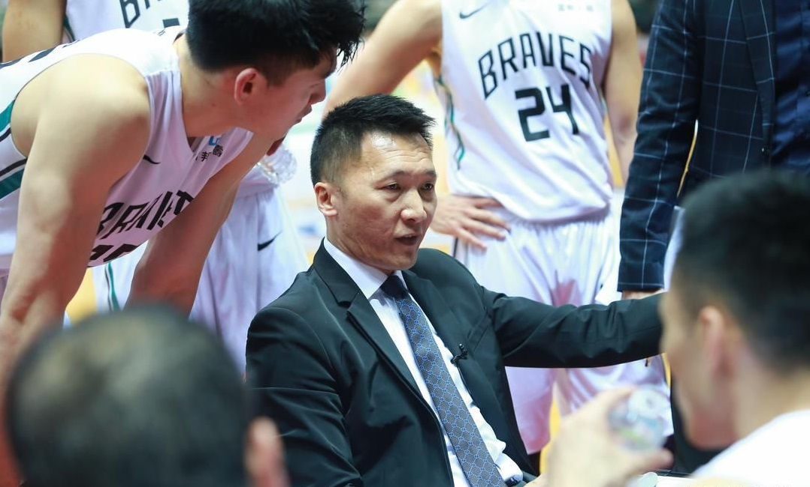

NEWS 最新消息

和璞園板凳席互嗆吃T 許晉哲：純屬意外
2018.04.24
第15季SBL總冠軍系列賽戰況相當膠著，近兩場都是雙位數獲勝，不過勝方交換，場外除了林書豪到場為「豪弟」林書緯加油引起熱議外，富邦總教練許晉哲連2場吃T意外成焦點，他表示，「上一場純屬意外。」
前役尾聲富邦後衛林書緯遭對方危險動作犯規，但裁判沒吹許晉哲有些不滿，接著璞園板凳席傳出「沒吹就沒吹」，讓許晉哲忍不住大聲回嗆，「不要廢話。」因此被裁判吹了一次技術犯規。
今天富邦洋將賽勒在籃下被包挾，許晉哲認為有犯規但裁判沒吹判，他再度動怒，並連續兩天收下T，他說，「賽勒被包夾，後衛從前面有hand check（以手推拒）犯規，中鋒在後也應該要有才對。」
許晉哲表示雙方可以討論，當下看見問題就針對問題解決，「裁判吹我T之後，看到賽勒那種情形也會吹了，所以我必須要被吹T。」無奈表示他要被吹犯規之後，裁判才會正視問題。
「裁判就不喜歡我。」許晉哲苦笑隨後解釋，「這是互相尊重的問題，如果有犯規就吹，而不是抱怨說雙方都有犯規，啊有犯規你就要吹，如果是吹雙方犯規就吹雙方犯規。」
此役輸球後，總冠軍系列賽富邦處於1:2落後，許晉哲坦言，「沒想到戴維斯、陳冠全跳出來投外線，對手有季後賽經驗的球員比我們多，這幾天我們只有張宗憲、林書緯、賽勒發揮，我們要克服這些問題。」